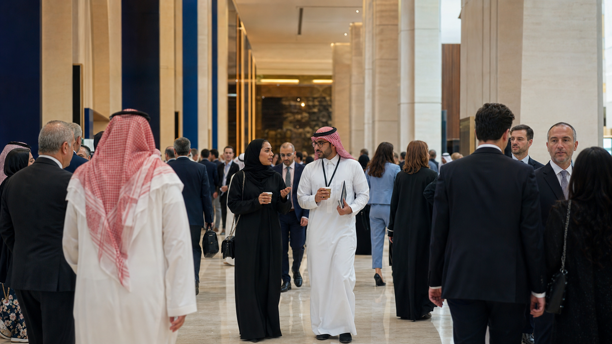
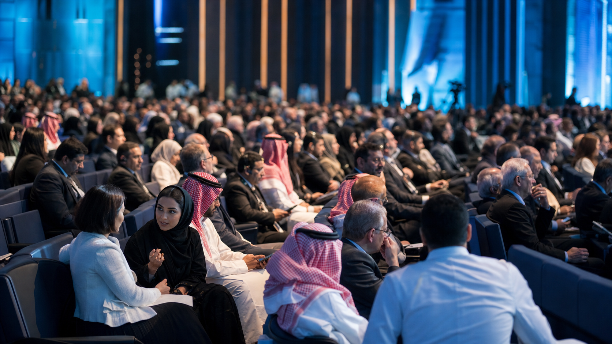

آخر المستجدات
الأخبار
إعلانات المنتدى، تحديثات البرنامج، أخبار الشراكات، والتغطيات الصحفية المعتمدة.
استعرض الأخبارتابع أخبار المنتدى، وشاهد المواد المرئية، واستعرض أبرز لحظات الحدث العالمي في الرياض من مكان واحد.
تجربة إعلامية واضحة وقابلة للتوسع، تخدم الزوار والمتحدثين والشركاء والجهات الإعلامية قبل المنتدى وأثناءه وبعده.
إعلانات المنتدى، تحديثات البرنامج، أخبار الشراكات، والتغطيات الصحفية المعتمدة.
استعرض الأخبارألبومات الجلسات وورش العمل والحضور والشركاء، بصور واضحة وعالية الجودة.
استعرض الصورنماذج توضح طريقة عرض الأخبار قبل اعتماد ونشر المواد الرسمية.
استعدادات متكاملة لاستقبال الخبراء وصنّاع القرار وممثلي المنظمات الدولية.
خبر تجريبي ←أربعة أيام من الجلسات وورش العمل والحوار حول مستقبل البيانات.
خبر تجريبي ←تعاون يجمع المؤسسات الوطنية والدولية لتعزيز نظم البيانات الشاملة.
خبر تجريبي ←عرض سينمائي مرن للفيلم الرئيسي والمقاطع القصيرة وملخصات أيام المنتدى.
شبكة صور مرنة تبرز الحضور الدولي والرياض والجلسات واللقاءات.

